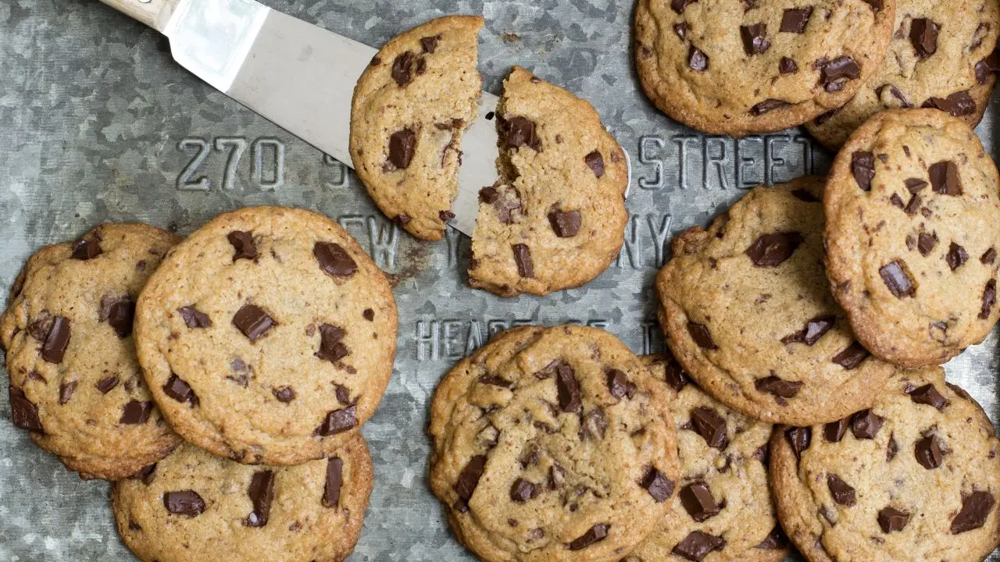

Varme Myke Cookies
Ingridientser
Antall stykker
18
225 g Romtemperert smør
200g Sukker
2 stk Egg
400g Hvetemel
350g Mørk sjokolade
1 ts bakepulver
Fremgangsmåte
1. Forvarm ovnen til 190°C. Pisk romtemperert smør og sukker sammen.
2. Bland inn eggene, tilsett mel og bakepulver og pisk det godt sammen
3. Hakk sjokoladen opp og bland det inn i røren, spar noe til pynt på cookiesene.
4. Sett 1-2 spiseskjeer deig på stekebrettet dekket med bakepapir
5. Stikk noen sjokoladebiter på toppen av hver kjeks og stek i ovnen i ca. 12-15 minutter eller til gylne. La de avskjøle i 10 minutter før de er klare til å nytes
6. Server med honning toppet på pannekakene.
Tips
Bruk din favoritt sjokolade, mørk eller lys, eller mer eksklusive varianter som for eksempel valrhona. Hvis barna får bestemme er smarties eller nonstop et gøy alternativ.
Kontakt Oss: oppskrifter123@outlook.com